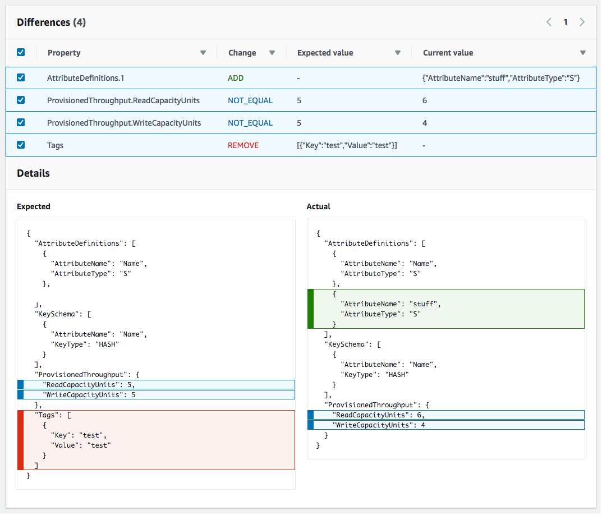

Les traductions sont fournies par des outils de traduction automatique. En cas de conflit entre le contenu d'une traduction et celui de la version originale en anglais, la version anglaise prévaudra.
Détection des modifications de configuration non gérées dans les ensembles de pile
Même si vous gérez vos piles et les ressources qu'elles contiennent CloudFormation, les utilisateurs peuvent modifier ces ressources en dehors de CloudFormation. Les utilisateurs peuvent modifier une ressource directement en utilisant le service sous-jacent qui a créé la ressource. En effectuant la détection de l'écart sur un ensemble de piles, vous pouvez déterminer la non correspondance ou l'écart de certaines instances de pile appartenant à cet ensemble de piles par rapport à la configuration attendue.
Comment CloudFormation effectuer la détection de la dérive sur un ensemble de piles
Lorsqu'il CloudFormation effectue une détection de dérive sur un ensemble de piles, il effectue une détection de dérive sur la pile associée à chaque instance de pile de l'ensemble de piles. Pour ce faire, CloudFormation compare l'état actuel de chaque ressource de la pile avec l'état attendu de cette ressource, tel que défini dans le modèle de la pile et tous les paramètres d'entrée spécifiés. Si l'état actuel d'une ressource diffère de l'état attendu, cette ressource est considérée comme présentant un écart. Si une ou plusieurs ressources d'une pile présentent un écart, alors la pile elle-même est considérée comme présentant un écart, et les instances de pile auxquelles la pile est associée sont également considérées comme présentant un écart. Si une ou plusieurs instances de pile d'un ensemble de piles présentent un écart, l'ensemble de piles est considéré comme présentant un écart.
La détection des dérives identifie les modifications non gérées, c'est-à-dire les modifications apportées aux piles situées en dehors de. CloudFormation Les modifications apportées directement CloudFormation à une pile, plutôt qu'au niveau de l'ensemble de piles, ne sont pas considérées comme de la dérive. Supposons par exemple que vous ayez une pile associée à une instance de pile d'un ensemble de piles. Si vous mettiez CloudFormation à jour cette pile pour utiliser un modèle différent, cela n'est pas considéré comme une dérive, même si cette pile possède désormais un modèle différent de celui des autres piles appartenant à l'ensemble de piles. En effet, la pile correspond toujours à la configuration de modèle et de paramètre attendue dans CloudFormation.
Pour des informations détaillées sur la manière dont CloudFormation la détection de la dérive sur une pile est effectuée, voirDétection de modifications non gérées de la configuration des piles et des ressources.
Comme il CloudFormation effectue une détection de dérive sur chaque pile individuellement, il prend en compte toutes les valeurs de paramètres remplacées pour déterminer si une pile a dérivé. Pour de plus amples informations sur le remplacement des paramètres de modèle dans les instances de pile, veuillez consulter Paramètres de substitution sur des instances de piles.
Si vous effectuez une détection de dérive directement sur une pile associée à une instance de pile, ces résultats de dérive ne sont pas disponibles sur la page de StackSetsconsole.
Pour détecter la dérive sur un ensemble de piles à l'aide du AWS Management Console
Ouvrez la AWS CloudFormation console à l'adresse https://console.aws.amazon.com/cloudformation
. -
Sur la StackSetspage, sélectionnez l'ensemble de piles sur lequel vous souhaitez effectuer une détection de dérive.
-
Dans le menu Actions sélectionnez Detect drifts (Détecter les écarts).
CloudFormation affiche une barre d'informations indiquant que la détection de dérive a été initiée pour l'ensemble de piles sélectionné.
-
Facultatif : pour suivre la progression de l'opération de détection de l'écart :
-
Sélectionnez le nom de l'ensemble de piles pour afficher la page Stackset details (Détails de l'ensemble de piles).
-
Sélectionnez l'onglet Operations (Opérations) sélectionnez l'opération de détection de l'écart, puis sélectionnez View drift details (Afficher les détails de l'écart).
CloudFormation affiche la boîte de dialogue Détails de l'opération.
-
-
Attendez que l'opération de détection de dérive soit CloudFormation terminée. Lorsque l'opération de détection de dérive est terminée, le statut de dérive et l'heure du dernier contrôle de dérive sont mis à CloudFormation jour pour votre ensemble de piles. Ces champs sont répertoriés dans l'onglet Vue d'ensemble de la page de StackSet détails de l'ensemble de piles sélectionné.
Le temps nécessaire à l'opération de détection de l'écart diffère en fonction du nombre d'instances de piles et du nombre de ressources incluses dans l'ensemble de piles. Vous ne pouvez exécuter qu'une seule opération de détection de dérive sur un ensemble de piles donné à la fois. CloudFormation poursuit l'opération de détection de dérive même après avoir fermé la barre d'informations.
-
Pour consulter les résultats de détection de l'écart pour les instances de piles d'un ensemble de piles, sélectionnez l'onglet Stack instances (Instances de pile).
La colonne Nom de la pile répertorie le nom de la pile associée à chaque instance de pile et la colonne Statut de l'écart répertorie le statut de l'écart de cette pile. Une pile est considérée comme ayant dérivé si une ou plusieurs de ses ressources ont dérivé.
-
Pour consulter les résultats de détection de l'écart pour la pile associée à une instance de pile spécifique :
-
Choisissez l'onglet Opérations.
-
Sélectionnez l'opération d'écart pour laquelle vous souhaitez afficher les résultats de détection de dérive l'écart. Un volet fractionné affichera le statut et le motif de l'instance de pile pour l'opération sélectionnée. Pour une opération d'écart, la colonne du motif du statut indique le statut de l'écart d'une instance de pile.
-
Choisissez l'instance de pile pour laquelle vous souhaitez afficher les détails de l'écart, puis choisissez Afficher les écarts des ressources. La table Statut de l'écart de ressource de la page Écarts de ressources répertorie chaque ressource de pile avec son statut d'écart et la dernière fois que la détection de l'écart a été lancée sur la ressource. L'ID logique et l'ID physique de chaque ressource sont affichés pour vous aider à l'identifier.
-
-
Vous pouvez trier les ressources en fonction de leur statut d'écart à l'aide de la colonne Statut de l'écart.
Pour afficher les détails sur une ressource modifiée :
-
La ressource étant sélectionnée, sélectionnez Afficher les détails de l'écart.
CloudFormation affiche la page détaillée de dérive pour cette ressource en particulier. Cette page répertorie les différences entre les ressources. Elle répertorie également les valeurs des propriétés attendues et actuelles des ressources.
Note
Si la pile appartient à une région et à un compte différents de ceux auxquels vous êtes actuellement connecté, le bouton Détecter l'écart sera désactivé et vous ne pourrez pas afficher les détails.
 -
Pour détecter la dérive sur un ensemble de piles à l'aide du AWS CLI
Pour détecter la dérive sur l'ensemble d'une pile à l'aide de AWS CLI, utilisez les aws
cloudformation commandes suivantes :
-
detect-stack-set-driftpour lancer une opération de détection de l'écart sur une pile. -
describe-stack-set-operationpour surveiller le statut de l'opération de détection de l'écart de la pile. -
Une fois l'opération de détection de l'écart terminée, utilisez les commandes suivantes pour renvoyer les informations d'écart souhaitées :
-
Utilisez
describe-stack-setpour renvoyer des informations détaillées sur l'ensemble de piles, y compris des informations détaillées sur la dernière opération d'écart effectuée sur l'ensemble de piles. (Les informations sur les opérations d'écart en cours ne sont pas incluses.) -
Utilisez
list-stack-instancespour renvoyer une liste des instances de pile appartenant à l'ensemble de piles, y compris le statut de l'écart et l'heure de la dernière vérification de l'écart de chaque instance. -
Utilisez
describe-stack-instancepour renvoyer des informations détaillées sur une instance de pile spécifique, y compris le statut de l'écart et l'heure de la dernière vérification de l'écart. -
Permet
list-stack-instance-resource-driftsde renvoyer des informations détaillées sur l'état de dérive de chaque ressource dans une instance de pile. -
Utilisez
stack-instance-resource-drifts-summarypour renvoyer des informations récapitulatives sur les dérives de ressources d'une instance de pile.
-
-
Utilisez
detect-stack-set-driftpour détecter l'écart sur un ensemble de piles entier et les instances de piles qui lui sont associées.L'exemple suivant lance la détection de l'écart sur l'ensemble de piles
stack-set-drift-example.$aws cloudformation detect-stack-set-drift \ --stack-set-name stack-set-drift-example{ "OperationId": "c36e44aa-3a83-411a-b503-cb611example" } -
Étant donné que les opérations de détection de l'écart des ensembles de piles peuvent être longues, utilisez
describe-stack-set-operationpour surveiller le statut de l'opération. Cette commande utilise l'ID de détection de l'écart de l'ensemble de piles renvoyé par la commandedetect-stack-set-drift.Les exemples suivants utilisent l'ID d'opération de l'exemple précédent pour renvoyer des informations sur l'opération de détection de l'écart de l'ensemble de piles. Dans cet exemple, l'opération est toujours en cours d'exécution. Sur les sept instances de piles associées à cet ensemble de piles, une instance de pile a déjà été détectée comme présentant un écart, deux instances sont synchronisées et la détection de l'écart pour les quatre instances de piles restantes est toujours en cours. Étant donné qu'une instance présente un écart, le statut de l'écart de l'ensemble de piles lui-même est désormais
DRIFTED.$aws cloudformation describe-stack-set-operation \ --stack-set-name stack-set-drift-example \ --operation-id c36e44aa-3a83-411a-b503-cb611example{ "StackSetOperation": { "Status": "RUNNING", "AdministrationRoleARN": "arn:aws:iam::123456789012:role/AWSCloudFormationStackSetAdministrationRole", "OperationPreferences": { "RegionOrder": [] }, "ExecutionRoleName": "AWSCloudFormationStackSetExecutionRole", "StackSetDriftDetectionDetails": { "DriftedStackInstancesCount": 1, "TotalStackInstancesCount": 7, "LastDriftCheckTimestamp": "2019-12-04T20:34:28.543Z", "InSyncStackInstancesCount": 2, "InProgressStackInstancesCount": 4, "DriftStatus": "DRIFTED", "FailedStackInstancesCount": 0 }, "Action": "DETECT_DRIFT", "CreationTimestamp": "2019-12-04T20:33:13.673Z", "StackSetId": "stack-set-drift-example:bd1f4017-d4f9-432e-a73f-8c22example", "OperationId": "c36e44aa-3a83-411a-b503-cb611example" } }Cet exemple illustre la même commande exécutée ultérieurement et montre les informations renvoyées une fois l'opération de détection de l'écart terminée. Deux des sept instances de piles associées à cet ensemble de piles présentent un écart. Le statut de l'ensemble de piles lui-même devient
DRIFTED.$aws cloudformation describe-stack-set-operation \ --stack-set-name stack-set-drift-example \ --operation-id c36e44aa-3a83-411a-b503-cb611example{ "StackSetOperation": { "Status": "SUCCEEDED", "AdministrationRoleARN": "arn:aws:iam::123456789012:role/AWSCloudFormationStackSetAdministrationRole", "OperationPreferences": { "RegionOrder": [] } "ExecutionRoleName": "AWSCloudFormationStackSetExecutionRole", "EndTimestamp": "2019-12-04T20:37:32.829Z", "StackSetDriftDetectionDetails": { "DriftedStackInstancesCount": 2, "TotalStackInstancesCount": 7, "LastDriftCheckTimestamp": "2019-12-04T20:36:55.612Z", "InSyncStackInstancesCount": 5, "InProgressStackInstancesCount": 0, "DriftStatus": "DRIFTED", "FailedStackInstancesCount": 0 }, "Action": "DETECT_DRIFT", "CreationTimestamp": "2019-12-04T20:33:13.673Z", "StackSetId": "stack-set-drift-example:bd1f4017-d4f9-432e-a73f-8c22example", "OperationId": "c36e44aa-3a83-411a-b503-cb611example" } } -
Lorsque l'opération de détection de l'écart de l'ensemble de piles est terminée, utilisez les commandes
describe-stack-set,list-stack-instances,describe-stack-instanceetlist-stack-instance-resource-driftspour consulter les résultats.La commande
describe-stack-setinclut les mêmes informations détaillées sur l'écart que celles renvoyées par la commandedescribe-stack-set-operation.$aws cloudformation describe-stack-set \ --stack-set-name stack-set-drift-example{ "StackSet": { "Status": "ACTIVE", "Description": "Demonstration of drift detection on stack sets.", "Parameters": [], "Tags": [ { "Value": "Drift detection", "Key": "Feature" } ], "ExecutionRoleName": "AWSCloudFormationStackSetExecutionRole", "Capabilities": [], "AdministrationRoleARN": "arn:aws:iam::123456789012:role/AWSCloudFormationStackSetAdministrationRole", "StackSetDriftDetectionDetails": { "DriftedStackInstancesCount": 2, "TotalStackInstancesCount": 7, "LastDriftCheckTimestamp": "2019-12-04T20:36:55.612Z", "InProgressStackInstancesCount": 0, "DriftStatus": "DRIFTED", "DriftDetectionStatus": "COMPLETED", "InSyncStackInstancesCount": 5, "FailedStackInstancesCount": 0 }, "StackSetARN": "arn:aws:cloudformation:us-east-1:123456789012:stackset/stack-set-drift-example:bd1f4017-d4f9-432e-a73f-8c22example", "TemplateBody": [details omitted], "StackSetId": "stack-set-drift-example:bd1f4017-d4f9-432e-a73f-8c22ebexample", "StackSetName": "stack-set-drift-example" } }Vous pouvez utiliser la commande
list-stack-instancespour renvoyer des informations récapitulatives sur les instances de piles associées à un ensemble de piles, y compris le statut de l'écart de chaque instance de pile.Dans cet exemple, l'exécution de
list-stack-instancessur l'exemple d'ensemble de piles, où le filtre du statut de l'écart est défini surDRIFTED, nous permet d'identifier les deux instances de piles dont le statut de l'écart estDRIFTED.$aws cloudformation list-stack-instances \ --stack-set-name stack-set-drift-example \ --filters Name=DRIFT_STATUS,Values=DRIFTED{ "Summaries": [ { "StackId": "arn:aws:cloudformation:eu-west-1:123456789012:stack/StackSet-stack-set-drift-example-b0fb6083-60c0-4e39-af15-2f071e0db90c/0e4f0940-16d4-11ea-93d8-0641cexample", "Status": "CURRENT", "Account": "012345678910", "Region": "eu-west-1", "LastDriftCheckTimestamp": "2019-12-04T20:37:32.687Z", "DriftStatus": "DRIFTED", "StackSetId": "stack-set-drift-example:bd1f4017-d4f9-432e-a73f-8c22eexample "LastOperationId": "c36e44aa-3a83-411a-b503-cb611example" }, { "StackId": "arn:aws:cloudformation:us-east-1:123456789012:stack/StackSet-stack-set-drift-example-b7fde68e-e541-44c2-b33d-ef2e2988071a/008e6030-16d4-11ea-8090-12f89example", "Status": "CURRENT", "Account": "123456789012", "Region": "us-east-1", "LastDriftCheckTimestamp": "2019-12-04T20:34:28.275Z", "DriftStatus": "DRIFTED", "StackSetId": "stack-set-drift-example:bd1f4017-d4f9-432e-a73f-8c22eexample" "LastOperationId": "c36e44aa-3a83-411a-b503-cb611example" }, [additional stack instances omitted] ] }La commande
describe-stack-instancerenvoie également ces informations, mais pour une seule instance de pile, comme dans l'exemple ci-dessous.$aws cloudformation describe-stack-instance \ --stack-set-name stack-set-drift-example \ --stack-instance-account 012345678910 --stack-instance-region us-east-1{ "StackInstance": { "StackId": "arn:aws:cloudformation:us-east-1:123456789012:stack/StackSet-stack-set-drift-example-b7fde68e-e541-44c2-b33d-ef2e2988071a/008e6030-16d4-11ea-8090-12f89example", "Status": "CURRENT", "Account": "123456789012", "Region": "us-east-1", "ParameterOverrides": [], "DriftStatus": "DRIFTED", "LastDriftCheckTimestamp": "2019-12-04T20:34:28.275Z", "StackSetId": "stack-set-drift-example:bd1f4017-d4f9-432e-a73f-8c22eexample" "LastOperationId": "c36e44aa-3a83-411a-b503-cb611example" } } -
Une fois que vous avez identifié les instances de pile qui ont dérivé, vous pouvez utiliser les informations relatives aux instances de pile renvoyées par les
describe-stack-instancecommandeslist-stack-instancesor pour exécuter list-stack-instance-resource-drifts. Cette commande renvoie des informations détaillées sur les ressources de la pile qui présentent un écart pour une opération d'écart particulière.L'exemple suivant utilise le paramètre
stack-instance-resource-drift-statusespour demander des informations d'écart de pile pour les ressources qui ont été modifiées ou supprimées dans le précédent exemple d'opération d'écart. La demande renvoie des informations sur la seule ressource qui a été modifiée, y compris des détails sur deux de ses propriétés et leurs valeurs qui ont été modifiées. Aucune ressource n'a été supprimée.$aws cloudformation list-stack-instance-resource-drifts \ --stack-set-name my-stack-set-with-resource-drift \ --stack-instance-account 123456789012 \ --stack-instance-region us-east-1 \ --operation-id c36e44aa-3a83-411a-b503-cb611example \ --stack-instance-resource-drift-statuses MODIFIED DELETED{ "Summaries": [ { "StackId": "arn:aws:cloudformation:us-east-1:123456789012:stack/my-stack-set-with-resource-drift/489e5570-df85-11e7-a7d9-50example", "ResourceType": "AWS::SQS::Queue", "Timestamp": "2018-03-26T17:23:34.489Z", "PhysicalResourceId": "https://sqs.us-east-1.amazonaws.com/123456789012/my-stack-with-resource-drift-Queue-494PBHCO76H4", "StackResourceDriftStatus": "MODIFIED", "PropertyDifferences": [ { "PropertyPath": "/DelaySeconds", "ActualValue": "120", "ExpectedValue": "20", "DifferenceType": "NOT_EQUAL" }, { "PropertyPath": "/RedrivePolicy/maxReceiveCount", "ActualValue": "12", "ExpectedValue": "10", "DifferenceType": "NOT_EQUAL" } ], "LogicalResourceId": "Queue" } ] }
Arrêt de la détection de l'écart sur un ensemble de piles
Étant donné que l'opération de détection de l'écart sur un ensemble de piles peut être long, vous pouvez parfois souhaiter arrêter une opération de détection de l'écart en cours d'exécution sur un ensemble de piles.
Pour arrêter la détection de l'écart sur un ensemble de piles à l'aide de l' AWS Management Console
Ouvrez la AWS CloudFormation console à l'adresse https://console.aws.amazon.com/cloudformation
. -
Sur la StackSetspage, sélectionnez le nom du stack set.
CloudFormation affiche la page de StackSets détails de l'ensemble de piles sélectionné.
-
Sur la page de StackSets détails, sélectionnez l'onglet Opérations, puis sélectionnez l'opération de détection de dérive.
-
Sélectionnez Stop operation (Arrêter l'opération).
Pour arrêter la détection de l'écart sur un ensemble de piles à l'aide de l' AWS CLI
-
Utilisez la commande
stop-stack-set-operation. Vous devez fournir à la fois le nom de l'ensemble de piles et l'ID d'opération de l'opération de détection de l'écart de l'ensemble de piles.$aws cloudformation stop-stack-set-operation \ --stack-set-name stack-set-drift-example \ --operation-id 624af370-311a-11e8-b6b7-500cexample